Two ImageIT gates, one shared dynamical landscape. Tumor cells sit in an oxygenated attractor or a hypoxic attractor. Entering hypoxia is the trip O₂→H; leaving is H→O₂ over the saddle pass.
2,636 tumor cells
400 E14S · GFP−
2,236 E15S · GFP+
wells at h≈-0.97 & 1.03
Two basins · traffic both ways
Entering hypoxia means leaving the oxygenated attractor and falling into the hypoxic well.
Leaving / exiting is the reverse trip back to O₂. Persistent cells are trapped at the hypoxic minimum — not “orbiting” hypoxia alone.
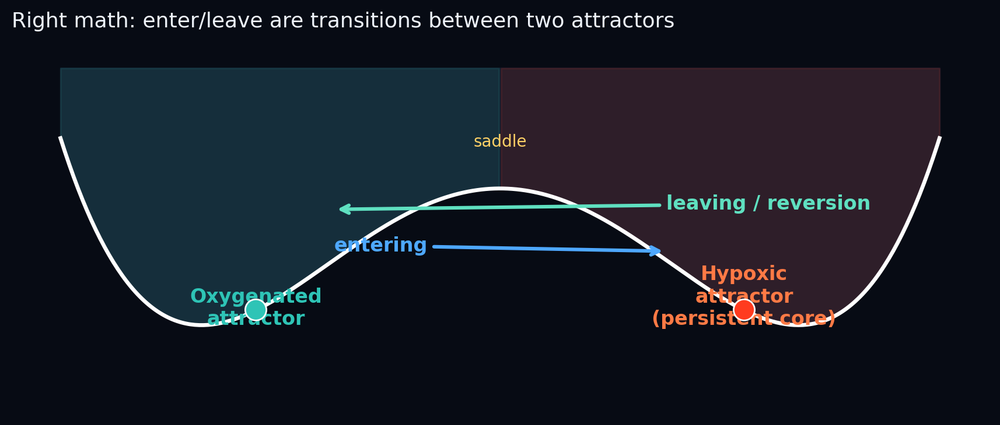
Schematic: enter = O₂→H · leave = H→O₂.
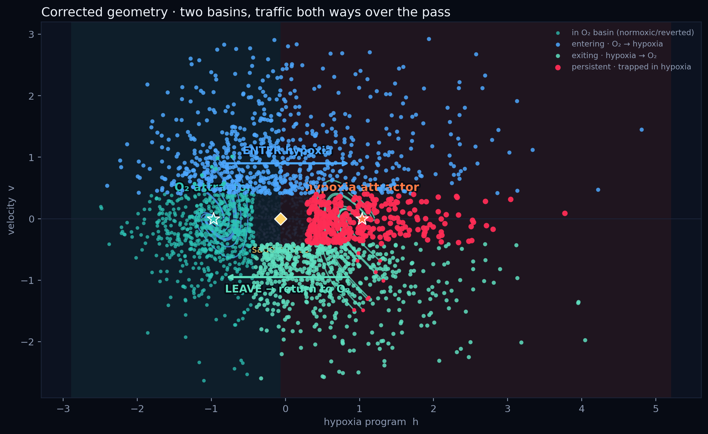
Phase plane with N↔H model paths and data.
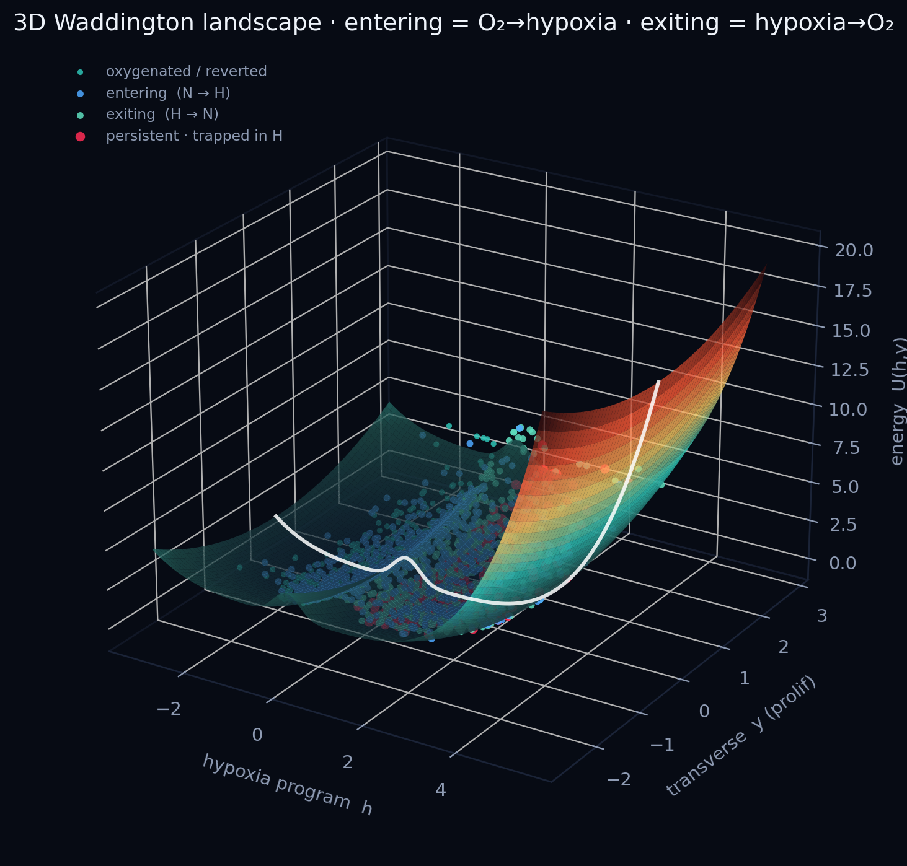
3D Waddington surface U(h,y): valleys = attractors, ridge = saddle pass, blue paths enter hypoxia, teal paths return to O₂.
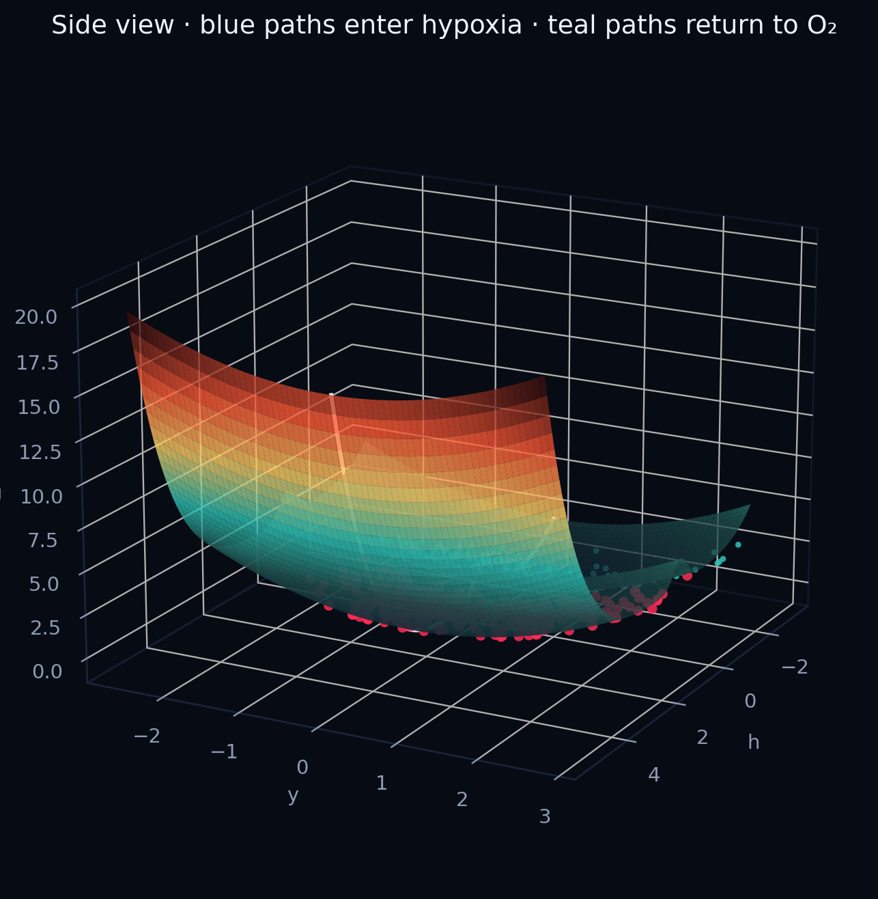
Side angle on the same landscape.
Start here
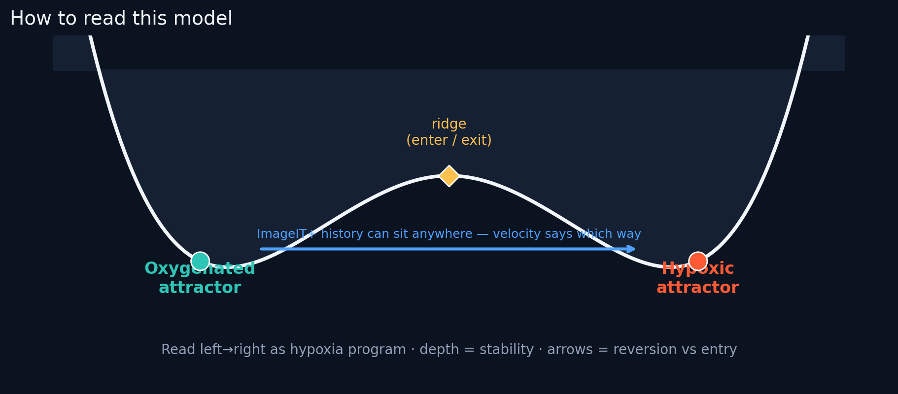
How to read the landscape in one picture.
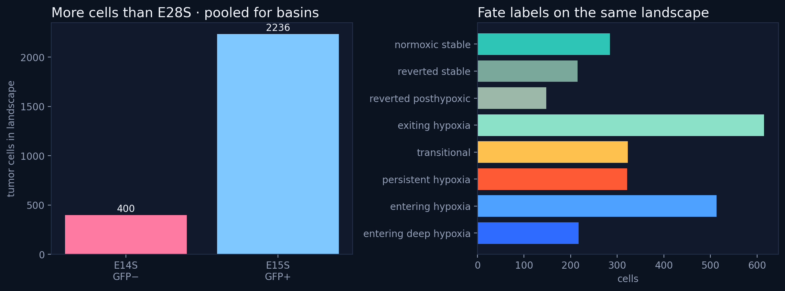
Cell counts by library and fate label.
The basins
We fit a multistable energy U(h) on the hypoxia score axis, then lift it to the phase plane with velocity and to a 3D surface with a transverse coordinate y (centered proliferation). Deep wells = stable fates. The ridge = undecided / entering / exiting cells.
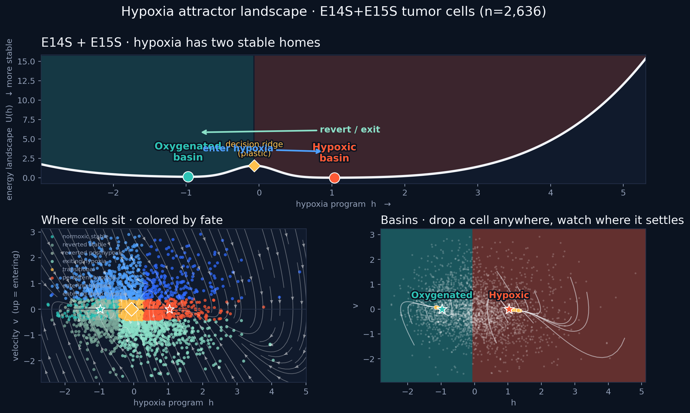
Hero view: potential wells, fate-colored cells, and basins with falling trajectories.
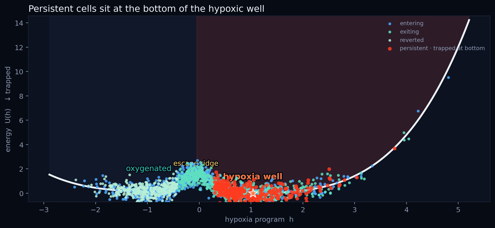
1D cut of U(h): persistent cells sit at the hypoxia minimum; traffic goes over the ridge to/from O₂.
E14 and E15 on the same map
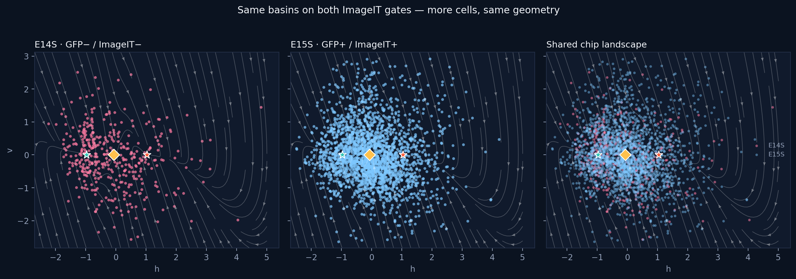
GFP− and GFP+ both occupy the shared basins — ImageIT marks history, the landscape marks current dynamics.
Who is claimed by which basin?
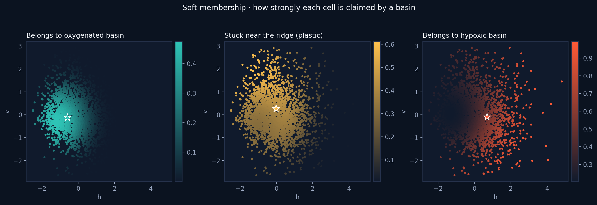
Soft membership to oxygenated, ridge, and hypoxic basins.
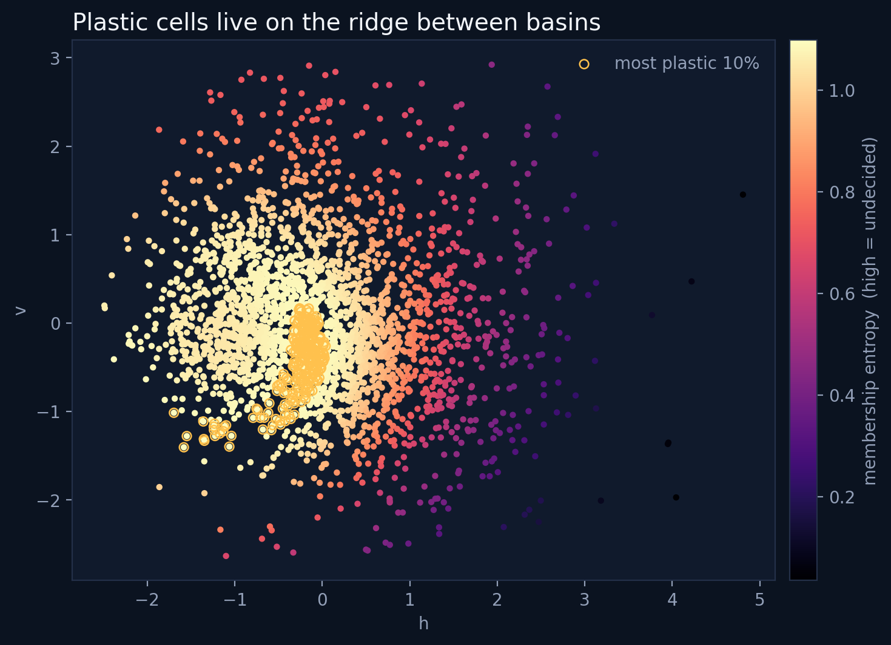
High membership entropy = plastic cells on the ridge.
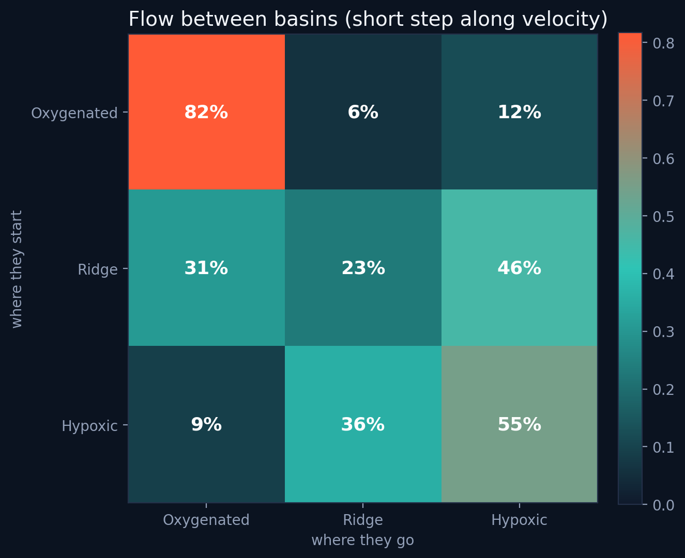
Short-time flow between basins along velocity.
Model
U(h) = (a/4)h⁴ − (b/2)h² + c h + d exp(−λ(h−hₘ)²)
U(h,y) = U(h) + ½ κ y²
dh/dt = v
dv/dt = −∂U/∂h − γ v
dy/dt = −κ y
enter: O₂ well → hypoxia well over the saddle
leave: hypoxia well → O₂ well
persistent: trapped at hypoxia minimum
Inspired by multistable attractors / transition membership in Zhou et al. Nat Methods 2024 (STT), and attractor–basin / metastable substate thinking in Mason et al. Stem Cell Reports 2025.